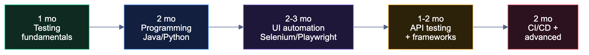

🧪 QA Engineer / SDET
The most underrated path from a tier-3 college into a product company.#
🏠 Home • 💼 All tracks • ⚙️ Backend • ☁️ DevOps
Read this before you dismiss QA#
Most students ignore QA because they've been told it's "for people who can't code." That is outdated and wrong, and believing it costs tier-3 students real opportunities.
The reality in 2026:
- SDET (Software Development Engineer in Test) is a coding role. You write automation frameworks in Java/Python/JS. The engineering is real.
- Google, Microsoft, Amazon, Atlassian, Adobe, Uber and Salesforce all hire SDETs, often at pay bands close to their SDE-1s.
- The competition is 10× lower. 500 students apply to every SDE opening; 50 apply to the SDET one. Same company, same office, same salary band, one-tenth the queue.
- DSA expectations are lower — usually Easy/Medium, not Hard graph and DP problems.
- SDET → SDE is a well-worn internal path. Many engineers at top companies entered through test.
Important
If you're a tier-3 student who wants a product company but is struggling with hard DSA, this is your highest-probability route in. It is not a lesser career. Automation engineers who understand systems deeply are genuinely scarce.
Manual QA vs SDET — know the difference#
| Manual QA | SDET / Automation | |
|---|---|---|
| What you do | Test by hand, write test cases, report bugs | Write code that tests code |
| Coding required | Minimal | Substantial |
| Fresher CTC | ₹3–6 LPA | ₹6–20 LPA |
| Career ceiling | Limited without automation | High — SDET II, SDET III, SET, SDE |
| Long-term outlook | Shrinking | Growing |
Learn manual testing concepts (2–4 weeks) because they're the foundation and they're asked in interviews. Then spend all your remaining time on automation. Do not aim to be a purely manual tester.
The roadmap#

Phase 1 — Testing fundamentals (1 month)#
- SDLC and STLC (Software Testing Life Cycle)
- Verification vs validation
- Testing types: unit, integration, system, acceptance
- Functional vs non-functional testing
- Black box, white box, grey box
- Smoke, sanity, regression, retesting
- Test case design — equivalence partitioning, boundary value analysis, decision tables, state transition
- Bug life cycle — new → assigned → open → fixed → retest → closed/reopened
- Severity vs priority (classic interview question — know the difference cold)
- Writing a good bug report: steps to reproduce, expected vs actual, environment, severity, attachments
- Agile & Scrum — sprints, standups, the QA role in a sprint
- Tools: JIRA, TestRail, Zephyr
Do: write 50 test cases by hand for a real app (Swiggy, IRCTC, Amazon). Include negative and edge cases. This becomes portfolio material.
Phase 2 — Programming (2 months)#
Pick Java (most QA jobs), Python (easiest), or JavaScript (if targeting Playwright/Cypress-heavy teams).
- Syntax, data types, control flow
- OOP — classes, inheritance, polymorphism, encapsulation, abstraction (essential for Page Object Model)
- Collections — lists, maps, sets
- Exception handling
- File I/O and reading test data from Excel/CSV/JSON
- Basic DSA — arrays, strings, hashmaps, sorting, searching → core/dsa.md
Tip
Java is the safest QA language in India. The overwhelming majority of Selenium job postings ask for Java, and most QA frameworks in Indian companies are Java-based.
Phase 3 — UI automation (2–3 months)#
- Selenium WebDriver — locators (id, name, xpath, CSS), waits (implicit/explicit/fluent), WebElement actions
- Handling: dropdowns, alerts, frames, windows, tables, file uploads
- Actions class — mouse hover, drag and drop, keyboard
- TestNG (Java) or PyTest (Python) — annotations, assertions, groups, priorities, parallel execution, data providers
- Page Object Model (POM) ⭐ — the architecture every interview asks about
- Page Factory
- Data-driven testing (Excel/CSV/JSON) with Apache POI
- Reporting — Extent Reports / Allure
- Screenshots on failure, logging (Log4j)
- Cross-browser testing
- Playwright or Cypress — modern, increasingly demanded, faster and less flaky
Phase 4 — API & performance testing (1–2 months)#
- REST fundamentals — methods, status codes, headers, request/response
- Postman — collections, environments, variables, pre-request scripts, test scripts, Newman CLI
- REST Assured (Java) or requests + pytest (Python) for automated API tests
- Response validation — status, body, schema, headers
- Auth testing — API keys, JWT, OAuth
- SQL for testing — verifying data in the database after an action → core/cs-fundamentals.md
- JMeter — load and performance testing basics
- Mocking and stubbing (WireMock)
Phase 5 — CI/CD and advanced (2 months)#
- Git & GitHub — branching, PRs → core/git-and-linux.md
- Jenkins or GitHub Actions — running tests automatically on every commit
- Maven / Gradle (Java) or pip/poetry (Python)
- Docker basics — containerised test environments
- BDD with Cucumber — Gherkin, feature files, step definitions
- Selenium Grid / parallel execution
- Test strategy — what to automate and what not to
- Flaky test debugging (a genuinely valued skill)
- Mobile automation — Appium (optional, opens more roles)
- Security testing basics — OWASP Top 10
💡 Projects that get you hired#
| Level | Project | What it proves |
|---|---|---|
| 🟢 | 50 test cases + bug reports for a real site | You understand testing, not just tools |
| 🟢 | Selenium scripts automating a login flow | Basic automation |
| 🟡 | POM framework for an e-commerce site | Architecture — the key interview topic |
| 🟡 | API test suite with REST Assured + Postman collection | API testing competence |
| 🟠 | Hybrid framework — POM + TestNG + data-driven + Extent Reports + Jenkins | Production-grade |
| 🟠 | BDD framework with Cucumber + Selenium | Industry-standard practice |
| 🔥 | Full CI pipeline — tests run on every push, results published, Dockerised, parallel | Genuinely senior-level for a fresher |
Tip
Your framework repo IS your resume as an SDET. Make it excellent: a clear README with an architecture diagram, folder structure explained, sample reports, setup instructions, and a screenshot of the Jenkins/GitHub Actions run. One outstanding framework repo will get you more interviews than five half-finished ones.
🎤 Interview breakdown#
| Round | What's tested | Weight |
|---|---|---|
| Manual testing / theory | STLC, test design, bug lifecycle, severity vs priority | 🔴 High |
| Coding | DSA — usually Easy/Medium (strings, arrays, hashmaps) | 🟠 Medium |
| Automation coding | Write Selenium code live, XPath, waits, POM | 🔴 High |
| Framework design | "Design a test framework from scratch" — architecture, layers, reporting | 🔴 High |
| API testing | REST concepts, Postman, REST Assured, status codes | 🟠 Medium |
| SQL | Joins, group by, verifying data | 🟠 Medium |
| Scenario-based | "How would you test a lift / login page / Swiggy checkout?" | 🔴 High |
| HR | Motivation, why QA, teamwork | 🟡 Medium |
❓ QA/SDET questions you WILL be asked
Theory
- Severity vs priority — give an example of high severity + low priority.
- Explain the bug life cycle.
- Smoke vs sanity vs regression testing?
- What is boundary value analysis? Give an example.
- When would you NOT automate a test?
- Verification vs validation?
- What goes into a good bug report?
Selenium
- Implicit vs explicit vs fluent wait — when do you use each?
- What is
StaleElementReferenceExceptionand how do you handle it? - Absolute vs relative XPath — which is better and why?
- How do you handle dynamic elements?
- How do you handle multiple windows / frames / alerts?
driver.close()vsdriver.quit()?
Framework
- Explain the Page Object Model and why it matters.
- Walk me through your framework's architecture.
- How do you handle test data?
- How do you run tests in parallel?
- How do you deal with flaky tests?
Scenario
- How would you test a login page? (Give 25+ cases: valid, invalid, empty, SQL injection, XSS, session timeout, browser back, password masking, caps lock, remember me, rate limiting, accessibility...)
- How would you test a lift/elevator? (Tests non-web thinking)
- The developer says "it works on my machine." What do you do?
- You have 2 days to test a release and 5 days of test cases. How do you prioritise?
Question 19 is asked in nearly every QA interview. Prepare 25+ cases across functional, negative, security, usability and performance. Most candidates give 6 and stop.
🏢 Who hires QA / SDET#
| Level | Companies | CTC |
|---|---|---|
| 🟢 Service | TCS, Infosys, Wipro, Cognizant, Accenture, Capgemini, LTIMindtree | ₹3.5–6 LPA |
| 🔵 Mid product | Zoho, Nagarro, Thoughtworks, Publicis Sapient, QA-focused firms (Qualitest) | ₹6–12 LPA |
| 🟣 Strong product | Razorpay, Swiggy, PhonePe, Zomato, Postman, Sprinklr, Freshworks | ₹12–22 LPA |
| 🔴 Top tier | Google, Microsoft, Amazon, Adobe, Atlassian, Uber, Salesforce all hire SDETs | ₹20–45 LPA |
📚 Free resources#
| Topic | Resource |
|---|---|
| Manual testing | Software Testing Help · Guru99 Testing |
| ISTQB syllabus (free) | istqb.org (great structured theory, certification optional) |
| Selenium | SDET-QA Automation Techie (YouTube) · Naveen AutomationLabs |
| Selenium docs | selenium.dev/documentation |
| Playwright | playwright.dev (official docs are excellent) |
| Cypress | docs.cypress.io |
| API testing | Postman Learning Center · REST Assured docs |
| Practice sites | the-internet.herokuapp.com · demoqa.com · saucedemo.com |
| JMeter | Apache JMeter docs |
| Interview prep | Search "Selenium interview questions" on Guru99 + GeeksforGeeks |
⚠️ QA-specific mistakes#
| Mistake | Fix |
|---|---|
| Staying purely manual | Automation is where the money and the future are. Learn to code. |
| Learning Selenium without OOP | POM is entirely OOP. Learn the language properly first. |
| Copying a framework from YouTube | Build your own. You'll be asked to defend every design decision. |
| Skipping DSA entirely | SDET roles at product companies do test DSA. Easy/Medium is enough. |
| No API testing skills | API testing is now half of most QA jobs. |
| Not learning SQL | You'll be asked to verify database state. It comes up constantly. |
| Treating QA as a fallback | Interviewers detect this instantly. Own the choice — automation is real engineering. |
| Ignoring CI/CD | Tests that don't run automatically have limited value. Learn Jenkins or GitHub Actions. |
Same company. Same salary band. One-tenth the competition.#
If you want a product company from a tier-3 college, this is the shortest honest path.